3.42. Variational Formulation of PDEs¶
Not every equation allows a variational formulation (e.g., Navier-Stokes or Euler equations do not have such a formulation), but many equations have one, and we explain how it works on several examples.
3.42.1. Poisson Equation¶
The Lagrangian for Poisson equation is:
(3.42.1.1)¶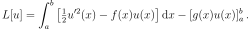
Important note: technically, as we will see below, this imposes the Neumann boundary condition and 1D Poisson equation with two Neumann boundary conditions does not have a unique solution. At least one Dirichlet boundary condition is needed for a unique solution. For example with 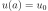 and 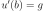 the boundary term becomes just 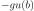. However, for simplicity, we will show the derivation with two Neumann boundary conditions first and we will discuss how to impose the Dirichlet boundary condition later.
The variational formulation is:
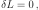
which yields:
(3.42.1.2)¶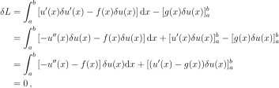
where we applied integration by parts.
This equation holds for any 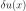, and in particular it holds for
at the boundary (i.e., for and
 ). Then the boundary term in (3.42.1.2) vanishes and we
obtain:
). Then the boundary term in (3.42.1.2) vanishes and we
obtain:
(3.42.1.3)¶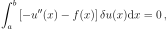
This equation holds for any that is zero at the boundary, and thus it implies:
(3.42.1.4)¶
Now we substitute (3.42.1.4) into (3.42.1.2) and obtain:
(3.42.1.5)¶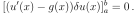
Thus (3.42.1.2) implies both (3.42.1.4) and (3.42.1.5). The equation (3.42.1.5) holds for any (generally not zero at the boundary) and thus it implies:
(3.42.1.6)¶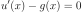
at the boundary. Thus  imposes the Neumann boundary condition, i.e.,
the value of the derivative 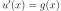 at the boundary. This condition
is imposed variationally.
imposes the Neumann boundary condition, i.e.,
the value of the derivative 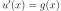 at the boundary. This condition
is imposed variationally.
To impose a Dirichlet boundary condition, we want to impose the value of
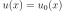 at the boundary for some constant 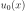. As such,  is not allowed to vary at that part of the boundary, which means that the
variation at the boundary. So we restrict the variation
to be zero at the Dirichlet part of the boundary in
(3.42.1.2) and thus also in (3.42.1.5). This implies that
(3.42.1.6) does not hold at the Dirichlet part of the boundary
and we have to set the value there directly.
is not allowed to vary at that part of the boundary, which means that the
variation at the boundary. So we restrict the variation
to be zero at the Dirichlet part of the boundary in
(3.42.1.2) and thus also in (3.42.1.5). This implies that
(3.42.1.6) does not hold at the Dirichlet part of the boundary
and we have to set the value there directly.
Example¶
As a particular example, let and . Then the Lagrangian (3.42.1.1) becomes:
(3.42.1.7)¶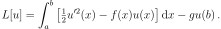
We can explicitly define the space  of all trial functions 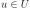 that
one can choose (admissible) and substitute in (3.42.1.7) as
follows. We have to impose the Dirichlet condition on the space
itself, and we also have to choose how smooth functions we want. For finite
element applications one typically chooses
of all trial functions 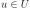 that
one can choose (admissible) and substitute in (3.42.1.7) as
follows. We have to impose the Dirichlet condition on the space
itself, and we also have to choose how smooth functions we want. For finite
element applications one typically chooses  (i.e., values and first
derivatives are from
(i.e., values and first
derivatives are from  ) and we obtain:
) and we obtain:
(3.42.1.8)¶
Now we derive what space the variation belongs to. Let 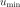 be the solution (the extremum of the functional (3.42.1.7)). Then from calculus of variations:
(3.42.1.9)¶
Here  is called the trial function and is called the test
function. Both and are from the space . Thus we can
compute:
is called the trial function and is called the test
function. Both and are from the space . Thus we can
compute:
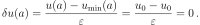
In addition, both 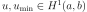, so also their difference
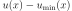 and thus also 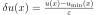 is from 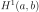. There are no other conditions (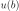
and are generally different, so in general ) and so  where the space
where the space  is:
is:
(3.42.1.10)¶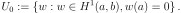
The definition of the space in (3.42.1.10) is derived from
the definition of the space in (3.42.1.8).
To compute the variation of  , we substitute (3.42.1.9) into
(3.42.1.7), differentiate with respect to
, we substitute (3.42.1.9) into
(3.42.1.7), differentiate with respect to  and then
set 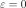 using (3.17.3.2):
and then
set 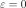 using (3.17.3.2):
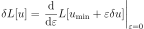
as was done in (3.42.1.2) and one obtains the weak form (below we drop the
label 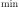 from and just use ):
(3.42.1.11)¶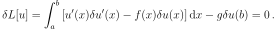
The task is to find such function so that (3.42.1.11) holds for all 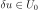. From (3.42.1.11) one obtains (as in (3.42.1.2)):
(3.42.1.12)¶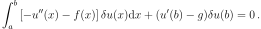
The governing equation (3.42.1.4) is the same:
(3.42.1.13)¶
The boundary term (3.42.1.5) becomes (see (3.42.1.12)):
Which implies .
The Dirichlet boundary condition is part of the definition of the function
space (3.42.1.8), so all trial functions that one can choose
(admissible) and substitute in 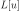 must lie in . From the derivation of
the space in (3.42.1.10) we can see that since the value of
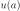 is fixed, we always have ; on the other hand, since
is not fixed, in general we have .
The Neumann boundary condition is imposed variationally due to the surface term in the weak form (3.42.1.11).
Summary¶
We have shown above that there are three equivalent formulations which fully and uniquely determine the solution and boundary conditions (both Dirichlet and Neumann):
Define the functional in (3.42.1.7) and the space
for the trial functions in (3.42.1.8).Define the weak form (3.42.1.11) and the two spaces
and , where and .Define the strong form (3.42.1.13) and the boundary conditions and .
Let us write down the three formulations in detail.
Variational Formulation¶
The variational formulation is the formulation 1. above.
The task is to find such that extremizes this functional (), where:
Weak Formulation¶
Weak formulation is the formulation 2. above, and it is customary to write 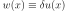 in the weak form (3.42.1.11):
(3.42.1.14)¶
The task is to find such so that (3.42.1.14) holds for all 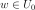, where
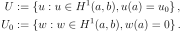
We can also define:
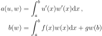
and write (3.42.1.14) as:
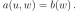
Strong Formulation¶
Strong formulation is the formulation 3. above. We are solving the equation:
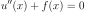
subject to boundary conditions and .
3.42.2. Radial Schrödinger Equation¶
The derivation is similar as for the Poisson equation, except that we have 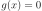 based on physical reasoning (that we cannot set the derivative to a given value, or, alternatively, that we require the operator to be self-adjoint).
The Lagrangian for the radial Schrödinger equation is:
(3.42.2.1)¶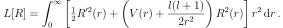
We minimize the Lagrangian subject to the normalization condition 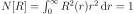 as follows:
(3.42.2.2)¶![0 &= \delta (L - \epsilon (N-1))
&= \delta \int_0^\infty \left[ \half r^2 R'^2
+ (r^2 V + \half l(l+1)) R^2 - \epsilon r^2R^2 \right] \,\d r =
&= 2\int_0^\infty \left[ \half r^2 R'(\delta R)'
+ (r^2 V + \half l(l+1)) R\delta R - \epsilon r^2 R\delta R \right]
\,\d r =
&= 2\int_0^\infty \left[ -\half (r^2 R')'
+ (r^2 V + \half l(l+1)) R - \epsilon r^2 R\right]\delta R \,\d r
+ [r^2 R' \delta R]_0^\infty](../_images/math/e5c59e5d4e0f265373541fa5bfac9109f1cea4b6.svg)
This equation holds for any 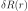, and so it also holds when we restrict 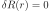 on the boundary and the boundary term vanishes. Then it implies the radial Schrödinger equation:
(3.42.2.3)¶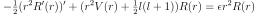
Substituting (3.42.2.3) into (3.42.2.2) we obtain:
(3.42.2.4)¶![[r^2 R' \delta R]_0^\infty = 0](../_images/math/1a759cfe2918d956fe51e859bec7a7231a990c53.svg)
And we can see that (3.42.2.2) implies both the equation
(3.42.2.3) and the boundary term (3.42.2.4). The
boundary term is zero for  , so it reduces to:
, so it reduces to:
(3.42.2.5)¶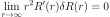
We can see that there is no natural condition at , and for 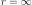 we
only have two possible options. Either we impose and
obtain the Dirichlet condition and the boundary term
(3.42.2.5) vanishes. Or we allow 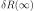 to vary,
and then (3.42.2.5) implies 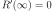.
Unlike for the Poisson equation we are not allowed to set 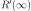 to anything other than zero, and that’s why (3.42.2.1) has no surface term.